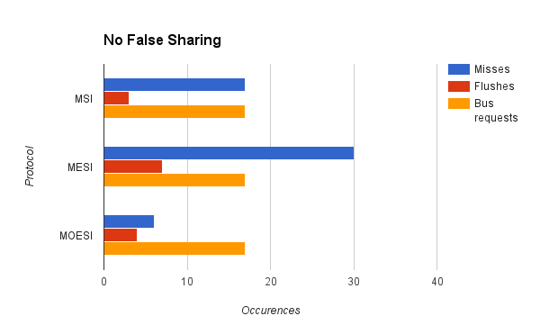
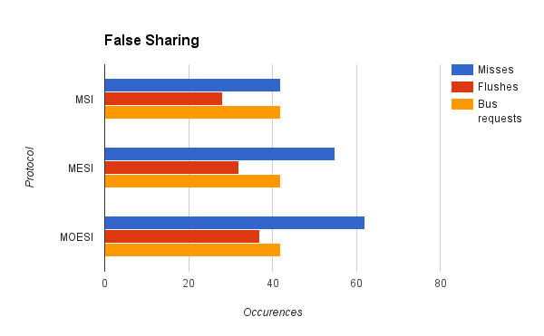

Final Project Writeup
Links
Github repo
Summary
We created a configurable multi-processor cache simulator. Our full package includes a custom Intel Pin tool for generating memory traces from arbitrary binaries, and the simulator itself, which can simulate the MSI, MESI, and MOESI cache protocols. We created these tools on our own machines, and they will work with any Windows or Unix-based machine provided the correct version of Intel Pin is installed.
Background
For our project, we decided to further explore the cache protocols we learned about in class and their comparative performance in both real-world applications and synthetic testbenches. One of the most important concepts that we had to consider was cache coherence. Cache coherence ensures that every processor in a system is dealing with updated data, an important requirement for systems of processors that share memory but have separate caches.
The three cache coherence protocols we explored in this project were MSI, MESI, and MOESI. The main differences between these coherence protocols lie in the number of different states and the actions of the memory bus upon transition between them. Detailed reading on MSI, MESI, and MOESI can be found on Wikipedia.
As input, our system takes in any binary executable. It will output interesting data about the program's execution, including the number of hits, misses, evictions, memory flushes, as well as the number of simulated cycles it takes to complete the program's memory operations.
Approach
Intel Pin tool
In order to generate our memory traces, we used the Intel Pin tool. There already exists a tool in the Pin toolkit for generating memory traces for any given executable. However, the trace generated contains a great deal of irrelavant system calls. Even simple programs yielded trace files tens of megabytes large. However, after obtaining some insight from Yuyang Guo and Isaac Lim's project from last year, we found that we could specify which functions were relevant and only generate traces for those routines. Thus, we were able to get our trace files down to an acceptable size.
Cache Simulator
We created our project in C++, and used the Visual Studio environment to build it. Below is a description of each of the important classes we used in our project and their purpose.
CacheController
This was the top-level class of our cache simulator. It contains an array of Cache objects, as well as a CacheConstants object to keep track of the constants we were using in the simulator. It also is responsible for parsing the trace files and scheduling memory requests in the trace files.
Cache
An object of this class represented an L1 cache belonging to a single processor. It contains CacheSets, which in turn contains CacheLines. This class is responsible for keeping track of and updating the state of each cache line.
CacheConstants
This class contains all of the user-defined constants used in the cache simulator, such as the numer of sets, the number of bytes per line, and which protocol we are currently simulating.
AtomicBusManager
This class handles all bus transactions. It ensures that Cache objects perform the appropriate transitions onto their cache lines when bus transactions are performed.
CacheJob
This is a memory request, consisting of a single character representing read or write, the memory address requested, and the thread ID of the thread requesting the data.
Verification
In order to verify that our cache simulator was actually correct, we hand-wrote test memory traces for each of the cache coherence protocols. These traces would ensure that each transition for a given protocol was undertaken at least once.
Results
We used our cache simulator to test several different programs. First, we compared cache performance of a program that had significant amounts of false sharing with a program that accomplished the same task but did not have false sharing.  
We also used our cache simulator on a CPU raytracer written for another class. As the memory trace file was very large, we use a small sample of the trace file that was compiled from random samples of the whole trace file. GRAPHS, TALK ABOUT THEM
Finally, just out of curiosity, we tested our cache simulator on a trace with completely random memory accesses. GRAPHS, TALK ABOUT THEM